Deploy a Web Application — Board Game Library
Django · MariaDB · Nginx · Gunicorn · VirtualBox · Linux · Python
Design and deployment of a full-stack web application for managing a board game library (ludothèque) as part of the RT3 IT competency. This was a team project with 4 students: setting up a virtualised infrastructure (VirtualBox VMs), Django development with full CRUD on multiple models, production hosting via Nginx + Gunicorn, and a MariaDB database on a dedicated VM.
Deployment architecture
Both VMs run on VirtualBox — bridged network configuration. Green = my work
My personal contributions
VirtualBox Infrastructure
MariaDB VM
- Debian Linux installation
- MariaDB installation and configuration
- Created the
ludotheque_dbdatabase - Created a dedicated Django user
- Configured bind-address for network access
- Imported schema and initial data
Web VM (Nginx + Gunicorn)
- Debian Linux installation
- Installed Python, Django, Gunicorn
- Configured Nginx as reverse proxy
- Linked Nginx ↔ Gunicorn via Unix socket
- Configured Gunicorn systemd service
- Deployed the Django application
Django Development — CRUD modules I built
Player (Joueur) me
- Model: username, first_name, last_name, email, password, type (pro/individual)
- Form: ModelForm with validation
- Views: list, detail, create, update, delete
- HTML test templates for CRUD
- URL routing configured
Comment (Commentaire) me
- Model: game (FK), player (FK), score, comment text, date
- Form: ModelForm
- Views: list, detail, create, update, delete
- HTML test templates for CRUD
- URL routing configured
Game list (ListeJeux) me
- Model: player (FK), games (M2M), creation date
- Form: ModelForm
- Views: list, detail, create, update, delete
- HTML test templates for CRUD
- URL routing configured
Game / Category / Author
- Built by other team members
- Models linked via FK
- File-based game import (auto-creates author)
- Full CRUD
Project description
📋 Data schema
- Categories (id, name, description)
- Games (id, title, year, cover photo, publisher, author, category)
- Authors (id, last name, first name, age, photo)
- Players (id, username, first/last name, email, password, type)
- Comments (game FK, player FK, score, text, date)
- Personal game list per user
🌐 Site features
- Full CRUD on all models
- New user registration
- Game reviews with scores (out of 20)
- Average score by user type (pro/individual)
- Best and worst review highlighted per game
- File-based game import (auto-creates missing authors)
- Player profile: game list + reviews + average score
- 🎲 Reroll — random game/author/category selection on homepage
🔧 Collaborative tools
- GitHub for source code versioning
- Gantt chart (task assignment)
- Written installation procedure
- 5-minute presentation + live demo
📚 Resources used
- R107 — Programming fundamentals
- R108 — Operating systems
- R109 — Web technologies
- R207/208/209 — Data sources & web dev
- R210/211 — English & communication
Tech stack
What I learned
- Setting up a multi-VM virtualised infrastructure in VirtualBox (web VM + DB VM)
- Configuring Nginx as a reverse proxy and linking it to Gunicorn (WSGI)
- Installing and configuring MariaDB: database creation, dedicated user, network access
- Building complete Django CRUD modules: models, forms, views (CBV/FBV), URLs, templates
- Handling model relationships: ForeignKey, ManyToMany with Django ORM
- Collaborative work with Git / GitHub and task distribution via Gantt chart
- Deploying a Django app in production on Linux with a systemd service
Project summary
This project is part of the RT3 competency (IT development). Working in a team of four, we designed and deployed a full-stack web application for managing a board game library (ludothèque). The application allows users to browse games, post reviews with scores, manage personal game lists, and discover random content via a Reroll feature on the homepage.
My personal contributions: I set up two VirtualBox virtual machines running Debian Linux — one hosting MariaDB as the database server, and one hosting the Django application served through Nginx and Gunicorn. I also implemented three complete CRUD modules in Django: Joueur (player — with fields: username, first_name, last_name, email, password, type), Commentaire (game reviews), and ListeJeux (personal game lists), including models, forms, views, URL routing, and HTML test templates.
Skills validated: AC0311 (IT systems), AC0312 (reading/correcting programs), AC0313 (algorithm to code), AC0314 (web architecture), AC0315 (data management mechanisms), AC0316 (collaborative development environment).
BUT R&T competency framework
Proof
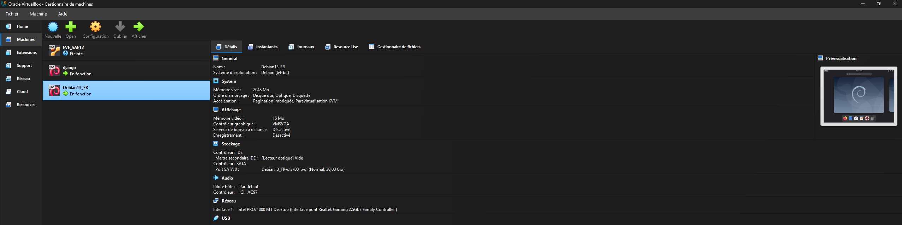
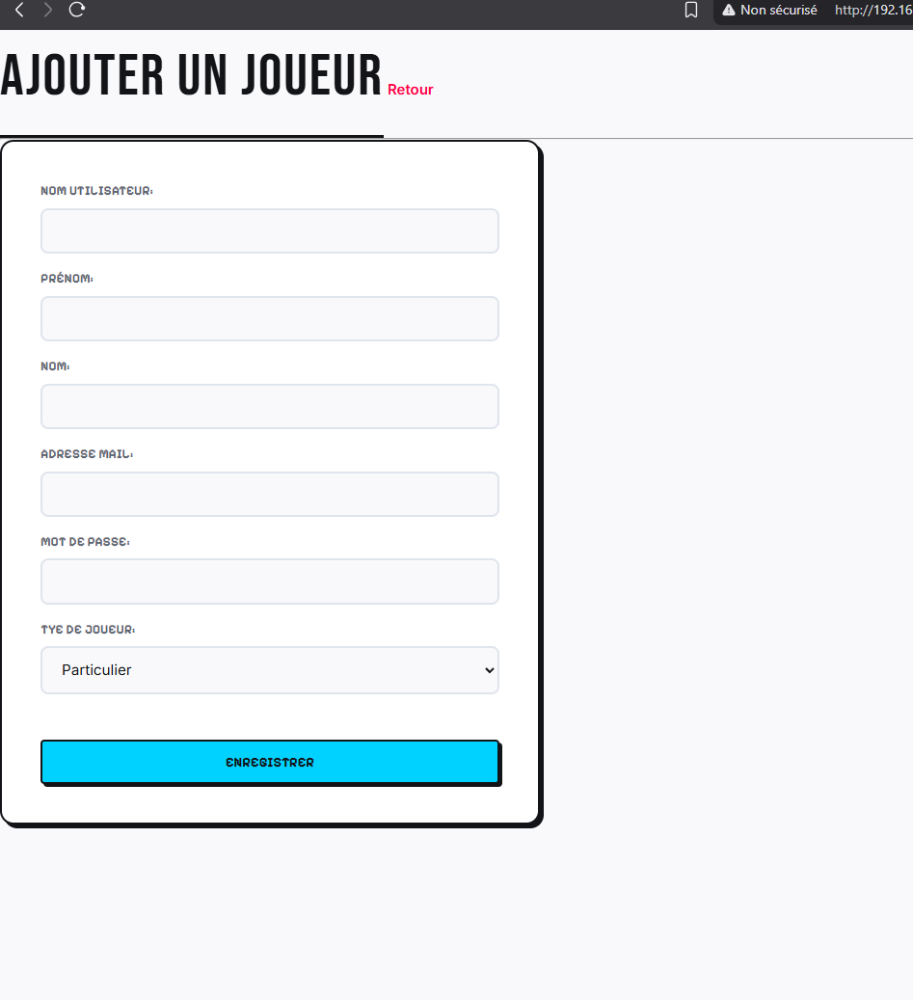
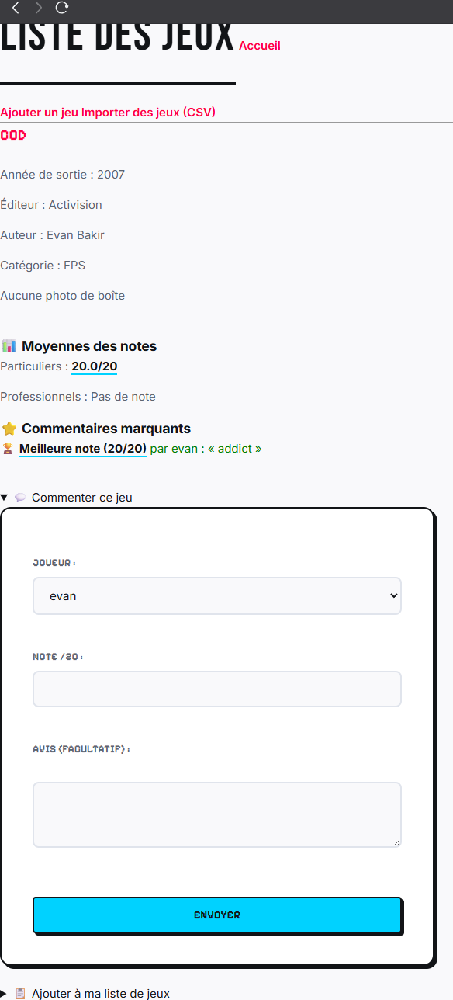
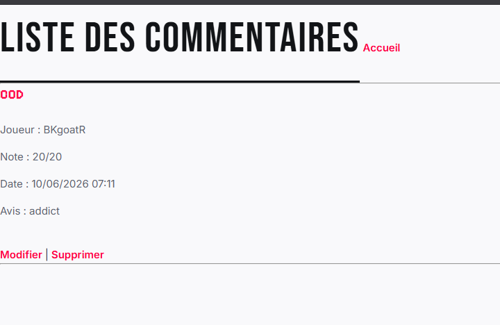
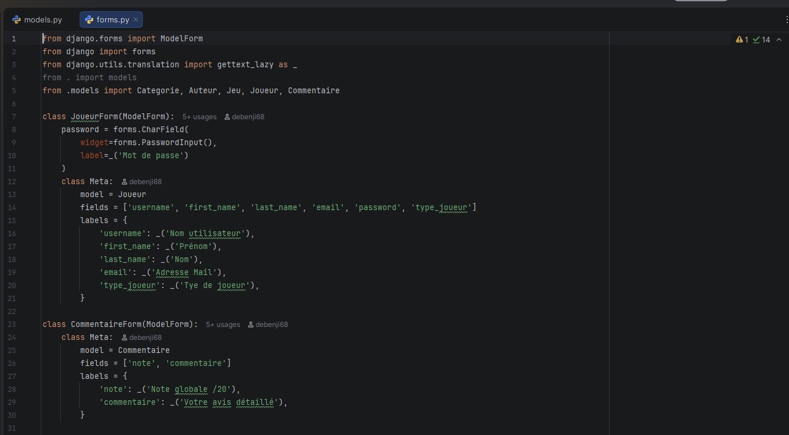
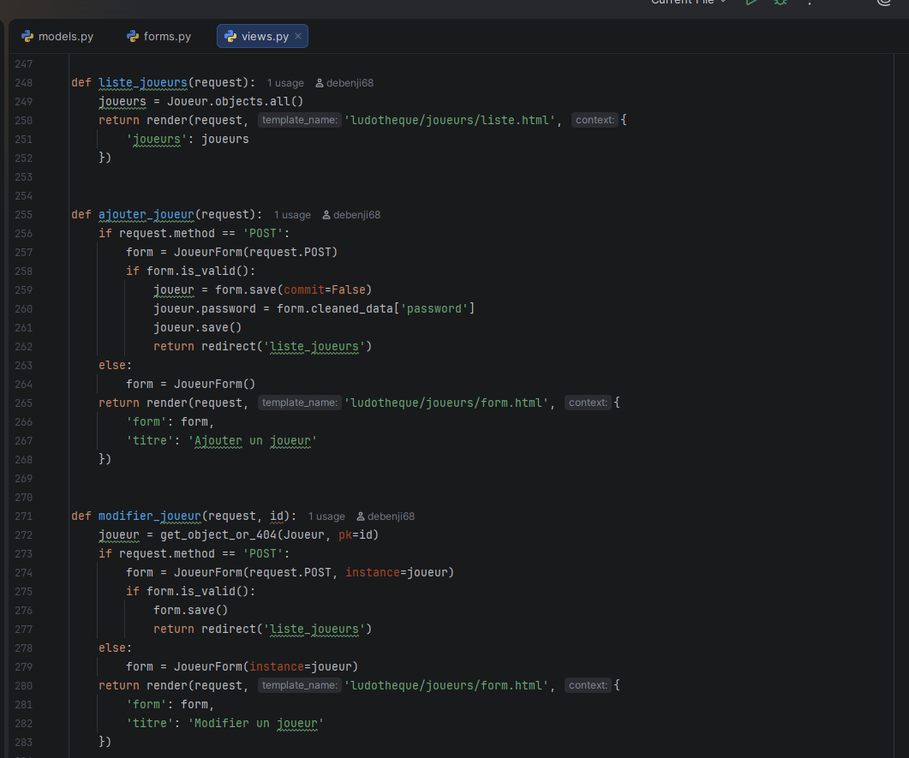
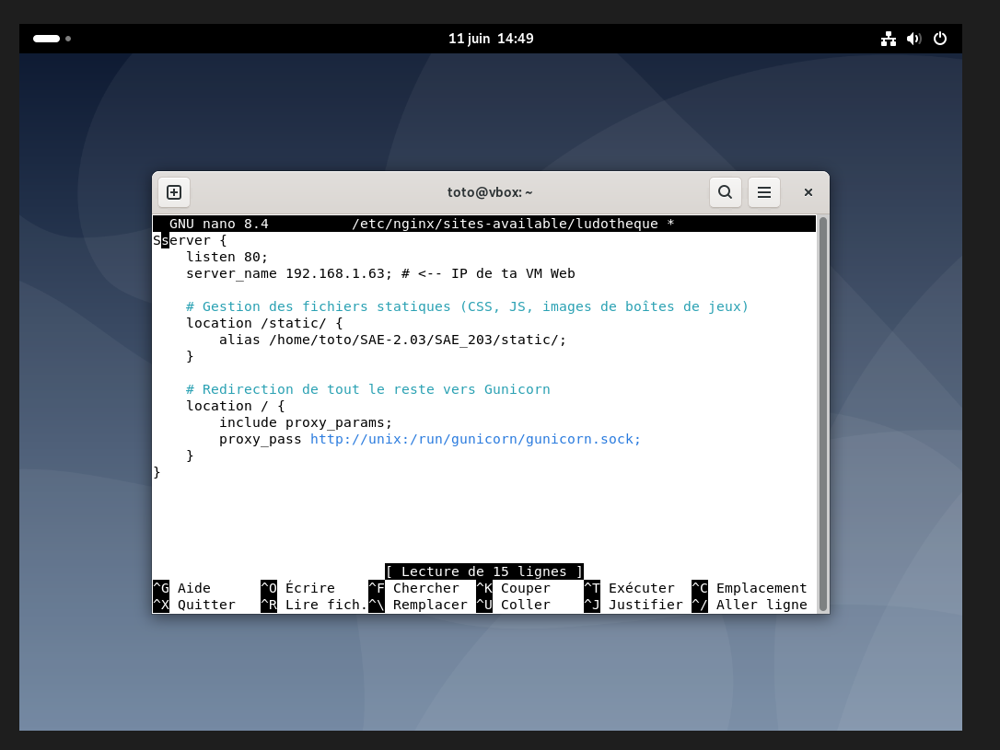
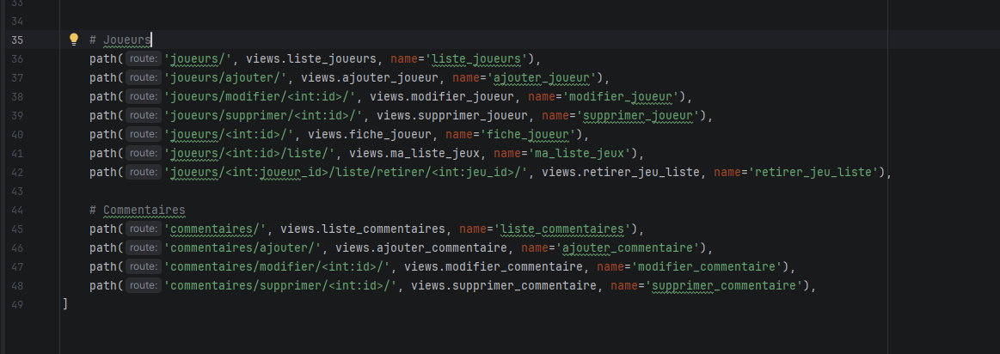
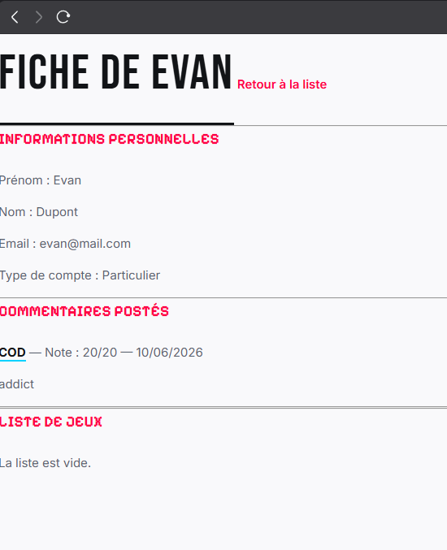
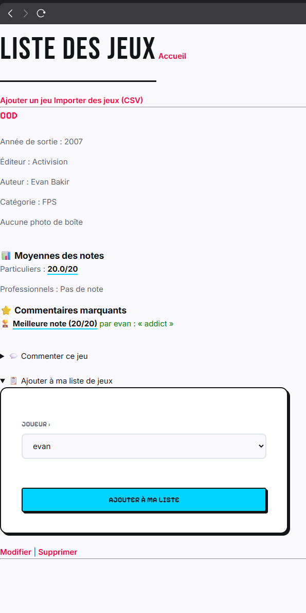
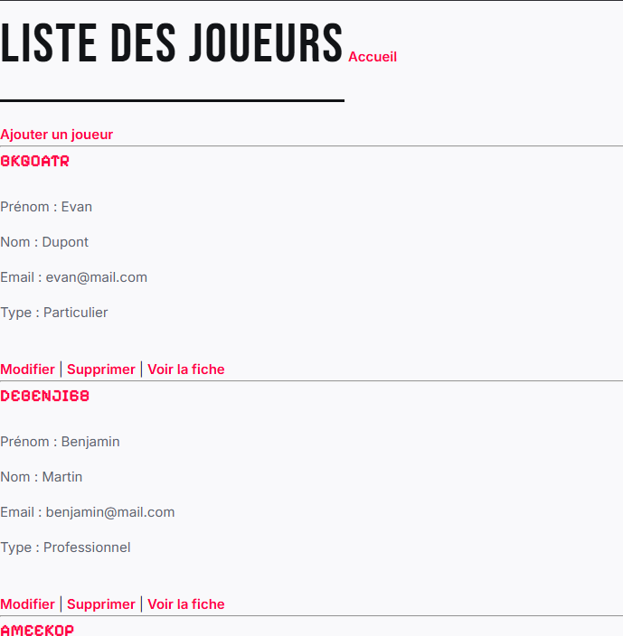
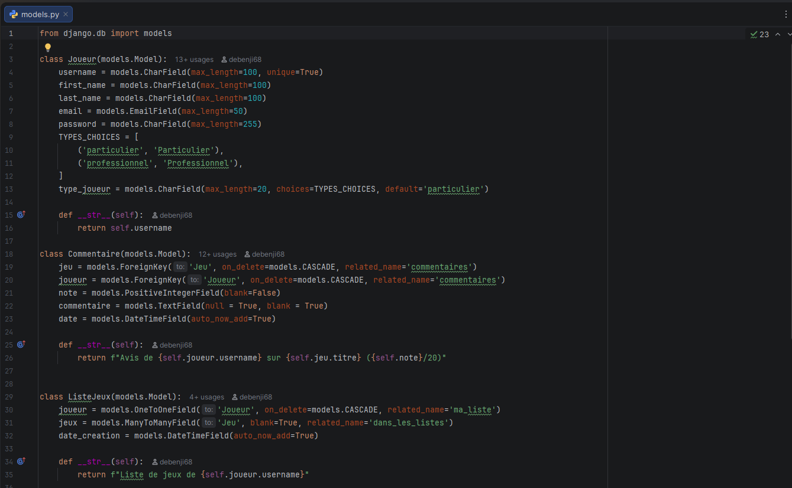
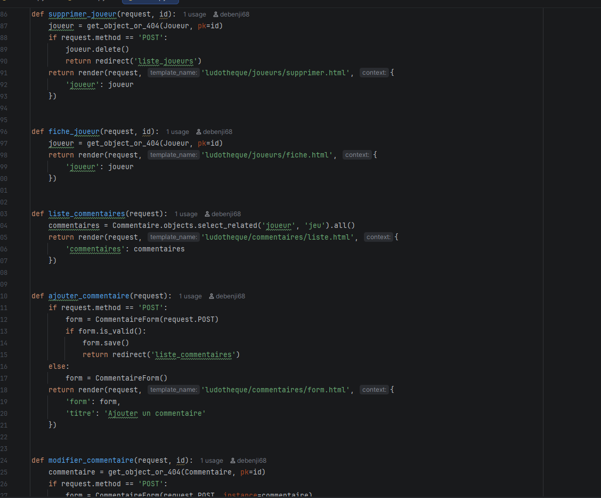
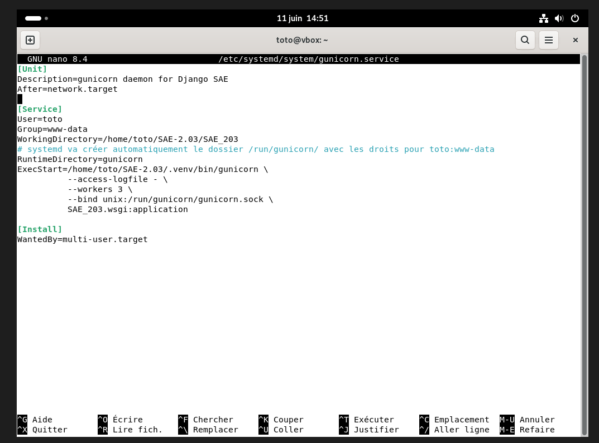
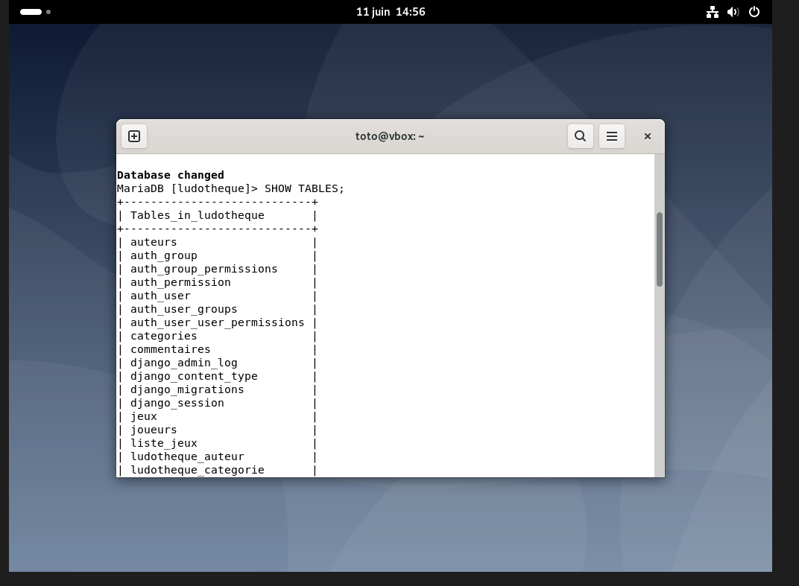